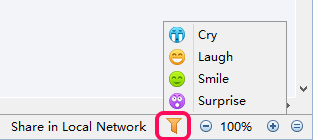
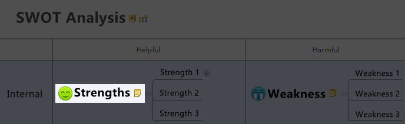
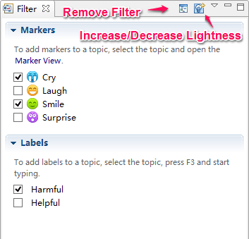

Filter
XMind's powerful filter function offers tremendous productivity improvements for large, complex maps. Filtering allows users to make only specific portions of the map content visible, based on certain topic attributes such as markers and labels, to facilitate faster information review and understanding. You can easily create quick filters, use more advanced filters, and remove filters.
Quick filter:- Click the filter icon at the bottom of the editor window
- Select the target marker in the drop-down list 
- The filtered topics will be highlighted 
- Clicking the filter icon again can increase the lighting contrast effect
- Double-clicking the filter icon can remove the filter
- Open Advanced Filter View by clicking "View - Advanced Filter" on the menu.
- Select the marker(s) and/or label(s) that you want to use as filters.
- The target topic(s) with the selected marker(s) and/or label(s), will be displayed with highlights.
- In the advanced filter view, we can "Remove the filter" and "Change the lightness". 
Note: By using Quick filter, you can only select one attribute marker at a time. Advanced Filter allows you to select multiple attributes at a time.